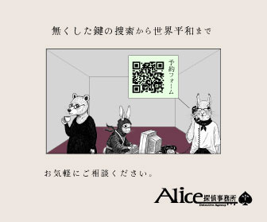

About me
「使いやすさ」を極め、「らしさ」をデザイン。確かな技術でカタチにしたい！
松川奈穂matsukawa naho
愛知県岡崎市出身、国分寺市在住。
前職では、港湾・空港専門誌の記者として取材・執筆をメインに、校正やレイアウト業務を担当。その過程で、複雑な情報やクライアントの要望を、「文章」だけでなく、図やフォントなど、より「視覚的な表現」で伝える重要性を強く意識するようになりました。
この経験から、グラフィック表現やUI/UXを意識したコンテンツ制作に挑戦したいと考え、職業訓練校でWEBデザインを学習。
現在は、前職で培った情報整理力と正確性を活かし、「機能的」で、ユーザーの課題解決につながる「幅広いデザイン」を、堅実な技術をもって実装できるWEBデザイナー・エンジニアを目指しています。


- HTML/CSS
- レスポンシブデザインを取り入れた静的なWEBサイトを制作できます。基本的なSEO対策を意識したマークアップが可能です。デザインカンプに忠実で、規則性のあるコーディングが可能です。Visual Studio Codeを使用しています。
- jQuery
- 既存ライブラリ（Slickなど）を用いたスライダーや、slideToggle() などのアニメーションを実装できます。
- Wordpress
- 管理画面上での更新作業ができます。PHPの編集経験は無く、CMS化を独学で勉強中です。
- Figma
- WEBサイトのデザインカンプ作成、プロトタイピング、コンポーネントを使用した効率的なデザイン作業が可能です。
- illustrator
- ロゴやアイコンなどのベクター素材を作成できます。イラストの描画を勉強中です。

- Photoshop
- 写真のレタッチ（明るさ、色調補正）、切り抜き、簡単なバナーを作成できます。
- ３月
- 名古屋外国語大学 英米語学部 英語コミュニケーション専攻卒業言語学に熱中する傍らインドネシア語・ロシア語を学習。jazzサークルに所属し、ピアノやドラムを演奏していました。
- 11月
- （株）都市計画通信社 (2022.11～2025.4)港や空港に関する専門誌の記事の作成、校正作業を担当。 ＞ 過去記事はこちら
特に努力したことは「専門分野に関する情報収集」
海上土木や最先端技術など、知識の足りない領域について日々勉強し、有益な取材・良質な記事を書く努力をしました。キャッチアップに自信があります。 - ７月
- 早稲田電子IT教育センター・WEBサイトデザイン科（職業訓練校【実習付き4か月コース】）７月～９月の三か月間、フロントエンド言語（HTML/CSS/jQuery）、デザインに関するスキルを習得。
その後、一か月間の企業実習を通じて、実サイトのページ作成及び更新作業（ワードプレス）を経験。実習で、実践的なコーディングを学ぶ
この一か月は最も楽しく、Gitの管理やcss関数を用いたコーディング等を意欲的に学び、定着させました。 - 現在
- ウェブデザイナー、フロントエンジニアを目指し求職活動中
テキパキ、正確に、丁寧に仕事をします！
前職の記者業務と校正業務で鍛えた時間管理能力を活かし、一つひとつの仕事を「正確」に、「スピード感」を持って対応します。締切を守りつつ、クオリティを追求します。
コミュニケーション力を発揮し、より良い仕事を！
課題解決に向けて自分の意見をきちんと伝えつつ、相手の意図を正確に受け取ることを大切に、信頼関係を築いています。協業で制作に取り組んだ経験も多くあります。
スキルや知識の習得に貪欲な情報収集家です！
制作において、分からない事や最新情報はすぐに調べ、手を動かし定着させています。また、記者職での経験から、1つの問題に対して多角的な視点で、論理的に整理することが得意です。
Works

海浜公園「ベイパーク三河」WEBサイト（架空）
★ 職業訓練校：個人制作課題（約2週間）★ 架空サイト
優先度の高い情報にスムーズにアクセスできるよう設計し、施設の魅力が一目で伝わるよう、効果的に画像を差し込み、要所にキャッチコピーを配置しました。公園の雰囲気にあわせたボタンや背景素材も一から作成しています。
また、どの画面幅でも快適に閲覧できるよう、レスポンシブ対応にも注力しました。

「アリス探偵事務所」WEBサイト（架空）
★ グループ制作課題（約2週間、3名で制作）★ 架空サイト ★ ロゴ制作・マークアップ
制作では、クラス名や命名規則を統一し、チーム内でのコーディングルールを徹底することで、誰が見ても理解しやすいコードを心掛けました。
また、レスポンシブデザインを意識して、異なる画面幅でも見やすいレイアウトに調整しています。

制作素材・パーツまとめ
★ illistrater・photoshop・Figma、生成AI
これまでにillistrater・photoshop・Figma、生成AIを使用して作成した素材をまとめました。